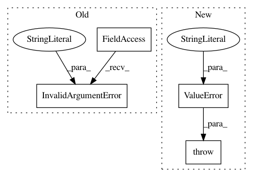

c8e121dcf64da30f6479eee9ddd9825e2a9ed7b1,tensorflow_transform/mappers.py,,scale_to_z_score_per_key,#Any#Any#Any#Any#Any#Any#,458
Before Change
with tf.compat.v1.name_scope(name, "scale_to_z_score_per_key"):
if key is None:
tf.errors.InvalidArgumentError(
"key is None, call `tft.scale_to_z_score` instead")
return _scale_to_z_score_internal(
x=x,
key=key,
elementwise=elementwise,
After Change
with tf.compat.v1.name_scope(name, "scale_to_z_score_per_key"):
if key is None:
raise ValueError("key is None, call `tft.scale_to_z_score` instead")
return _scale_to_z_score_internal(
x=x,
key=key,
elementwise=elementwise,
In pattern: SUPERPATTERN
Frequency: 3
Non-data size: 4
Instances
Project Name: tensorflow/transform
Commit Name: c8e121dcf64da30f6479eee9ddd9825e2a9ed7b1
Time: 2020-08-12
Author: zoy@google.com
File Name: tensorflow_transform/mappers.py
Class Name:
Method Name: scale_to_z_score_per_key
Project Name: tensorflow/transform
Commit Name: c8e121dcf64da30f6479eee9ddd9825e2a9ed7b1
Time: 2020-08-12
Author: zoy@google.com
File Name: tensorflow_transform/mappers.py
Class Name:
Method Name: scale_by_min_max_per_key
Project Name: tensorflow/transform
Commit Name: c8e121dcf64da30f6479eee9ddd9825e2a9ed7b1
Time: 2020-08-12
Author: zoy@google.com
File Name: tensorflow_transform/mappers.py
Class Name:
Method Name: scale_to_0_1_per_key